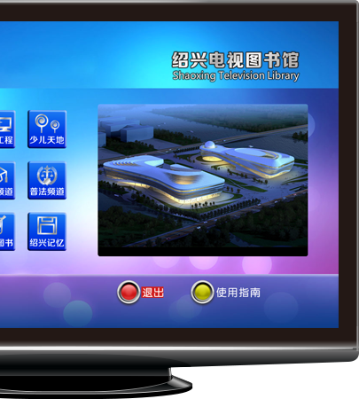

电视图书馆

“绍兴电视图书馆” 系绍兴图书馆与中广有线绍兴分公司合作开发、联合建设的一个惠民项目。通过数字电视平台，以图文信息与视频相结合的方法，将绍兴图书馆的服务送到千家万户，实现了公共文化的“超市式供应”、“菜单化服务”。2013年10月，被列为创建第二批国家公共文化服务体系示范项目。
互动版共设置15个栏目，包括图书馆服务项目介绍、各类活动信息、书目查询、图书续借、电视图书、电视杂志、讲座、戏曲、图片等。用户通过电视遥控器进入到数字电视平台主页面，选择“视事通”中的“电视图书馆”栏目，就可以观看绍兴电视图书馆。